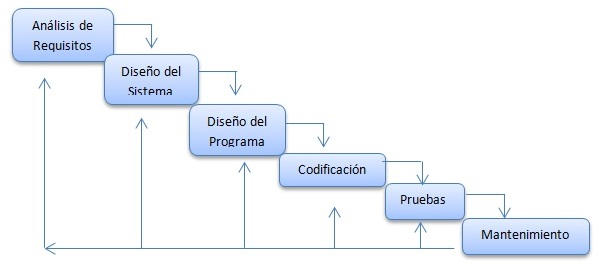

Definiciónes
“La ingeniería de software es el establecimiento y uso de principios robustos de la ingeniería a fin de obtener económicamente software que sea fiable y que funcione eficientemente sobre máquinas reales”
Fritz Bauer
“Es la aplicación de enfoque sistemático, disciplinado y cuantificable hacia el desarrollo, operación y antenimiento del software ”
IEEE
Las definiciones brindadas por Fritz Bauer asi como por la IEEE coinciden en un punto central, la ingenieria de software tiene como eje central el compromiso con la calidad y la eficiencia en su desarrollo.
Roger S. Pressman en su libro "Ingeniería del software un enfoque práctico" lo retoma a traves de la siguiente reflexion
Como cualquier enfoque de ingeniería, debe basarse en un compromiso organizacional con la calidad. La administración total de la calidad, Six Sigma y otras filosofías similares alimentan la cultura de mejora continua, y es esta cultura la que lleva en última instancia al desarrollo de enfoques cada vez más eficaces de la ingeniería de software. El fundamento en el que se apoya la ingeniería de software es el compromiso con la calidad.
Algunas características de calidad fundamentales en todo producto de programación son:
Utilidad --- Que satisfaga las necesidades del usuario, desempeñando las funciones esperadas.
Confiabilidad --- Capacidad de un programa para desempeñar una función requerida bajo ciertas condiciones durante un tiempo específico. El grado de confiabilidad deseado en un producto depende del costo de las fallas.
Claridad --- Los productos de software deben ser escritos con claridad y ser fáciles de entender, buscando en primera instancia un uso sencillo y en segundo plano agilizar los procesos de pruebas y mantenimientos.
Económico --- El producto debe ser costeable en su desarrollo, mantenimiento y uso. Un software debe operar normalmente usando menos tiempo o recursos humanos o materiales de los que se requerían antes de tenerlo.
Elementos de la ingeniería de software
La ingeniería de software es una tecnología que consta de varias capas, conocidas como:
- Procesos
- Métodos
- Herramientas
Las cuales se encuentran relacionadas intimamente entre sí, donde se puede resaltar la capa de procesos como
El fundamento para la ingeniería de software
Procesos
Un proceso es una colección de actividades de trabajo, acciones y tareas que se realizan cuando va a crearse algún producto terminado. Cada una de las actividades, acciones y tareas se encuentra dentro de una estructura o modelo que define su relación tanto con el proceso como entre sí
En el contexto de la ingeniería de software, un proceso no es una prescripción rígida de cómo elaborar software de cómputo. Por el contrario, es un enfoque adaptable que permite que las personas que hacen el trabajo (el equipo de software) busquen y elijan el conjunto apropiado de acciones y tareas para el trabajo.
Existen una gran diversidad de procesos que se pueden implementar durante el desarrollo de un producto de software, muchos de ellos distinguiendose en los aspectos a enfatizar a la hora de buscar un incremento en la eficiencia del desarrollo.
A nivel profesional los procesos mas utilizados son:
- PSP ..... Personal Software Process
- TSP ..... Team Software Process
- RUP ..... Rational Unified Process
Métodos
Los métodos de la ingeniería de software proporcionan la experiencia técnica para elaborar software.
Los métodos de la ingeniería del software indican "cómo" construir técnicamente el software. Incluyen un conjunto amplio de tareas, como comunicación, análisis de los requerimientos, modelación del diseño, construcción del programa, pruebas y apoyo.
Los métodos de la ingeniería de software se basan en un conjunto de principios fundamentales que gobiernan cada área de la tecnología e incluyen actividades de modelación y otras técnicas descriptivas.
A grandes rasgos los métodos de la ingeniería de software se encuentran relacionados intimamente con el ciclo de vida del software
- Análisis y definición de requerimientos
- Diseño del sistema
- Codificación del sistema (Desarrollo)
- Pruebas unitarias
- Prueba de integración
- Prueba del sistema
- Implementación del sistema
- Mantenimiento
- Fin del Ciclo de vida (Post-mortem)

Herramientas
Instrumento o sistema automatizado para realizar de manera mas exacta , eficiente y productiva una tarea.
Cuando se integran las herramientas de modo que la información creada por una pueda ser utilizada por otra, queda establecido un sistema llamado ingeniería de software asistido por computadora que apoya el desarrollo de software.
Las herramientas más conocidas son los lenguajes de programación, IDE´s, paradigmas de programación, API´s, Herramientas de gestión de proyectos, sistemas de control de versiones, cloud computing, herramientas CASE, herramientas de modelado, entre otras.
Enfocandonos en herramientas de modelado, podemos mencionar a UML como la más utilizada en la industria para representaciones a traves de notaciones y diagramas estándar para modelar sistemas orientados a objetos. Clasificados de la siguiente manera:
- Diagramas estáticos
- Diagramas de Clases
- Diagramas de Componentes
- Diagramas de Despliegues
- Diagramas de Objetos
- Diagramas de Casos de uso
- Diagramas Dinámicos
- Diagramas de Actividad
- Diagramas de Estados
- Diagramas de Colaboración
- Diagramas de Secuencia